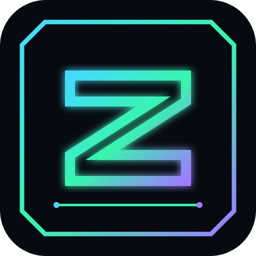

9KPIXEL MISSION
FEATURED · ULTRA
ZYVORA PIXEL MISSION ULTRA 9K
Fast missions, survival battles and futuristic pixel combat.

ZYVORA ULTRAALL-IN-ONE PLATFORMSETUP →Games, creative tools and a real Termux setup launcher — united inside one premium ZYVORA experience.
Enter the worlds being built by ZYVORA.
Fast missions, survival battles and futuristic pixel combat.
Build. Survive. Defend your zone.
Classic strategy inside a cyber arena.
Quick rounds. Simple rules. High pressure.
Choose a setup profile and prepare your real Termux environment.
Web development stack for HTML, CSS, JavaScript, Node.js and Python.
Install the ZYVORA developer/tooling environment.
Base Termux environment with Git, Curl, Python and Node.js.
After confirmation, open the real Termux app for execution.
Select a profile → review → tick confirmation → continue to Termux.
One ecosystem that grows with every game, tool, service and community idea.
BACK TO TOP ↑You selected ZYVORAX Core. The website will prepare a predefined setup command for the real Termux app.